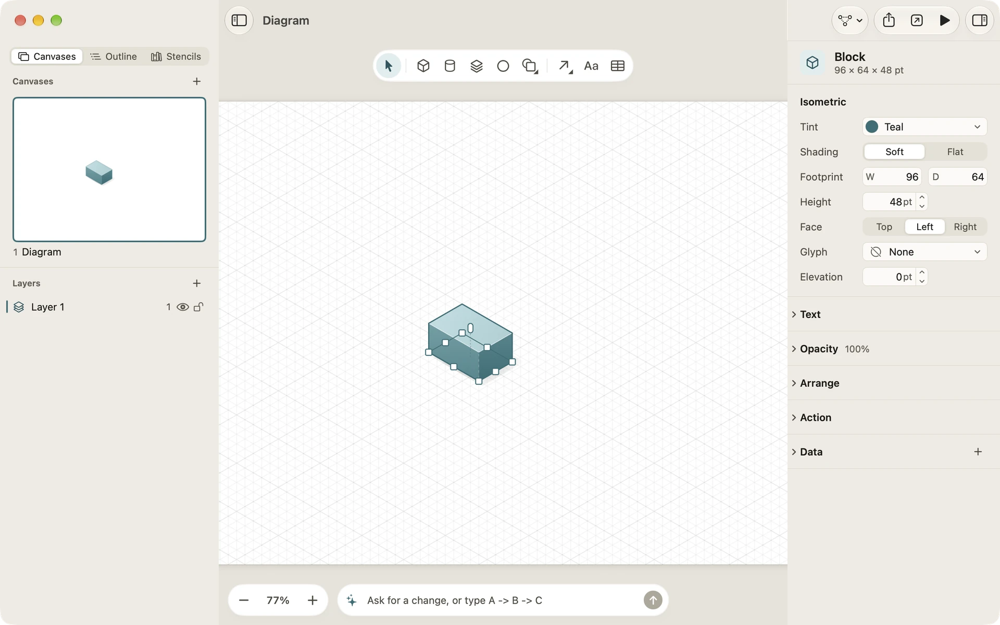
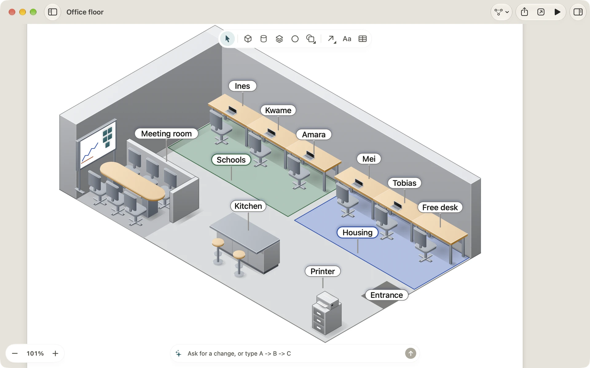

Isometric canvases
An isometric canvas draws your diagram as if you were looking down at it from a corner: a floor and two walls, with things that stand up off the floor. It suits server rooms, offices, shops, networks and anything with a place in it. This page covers how to start one, how graphics sit in it and how Diagrove works out what is in front.
Start an isometric diagram
- On the Mac, choose File › New isometric diagram (Control-Command-N), or New isometric diagram in the Welcome window.
- On iPad, choose Choose a template, then Blank isometric diagram.
- From a template, start from System architecture, Order fulfilment or one of the Spaces templates. See Templates.
Any canvas can switch. With nothing selected, set Projection to Isometric in the inspector’s Canvas section. The canvas switches at once and moves its graphics onto the floor, where you can give them height; a notice says so, with Undo. Switching back to Flat keeps each graphic’s plane and elevation for the next time you switch.
The isometric grid
The grid runs along three axes 120° apart, so its floor lines lie at 30° to the horizontal, and every fifth line is stronger. Moving, resizing and drawing snap to it, as on a flat canvas. Hold Command to move freely.

Planes: the floor and two walls
Every graphic on an isometric canvas lies in a plane: the floor, the left wall or the right wall. What you draw lies on the floor until you move it. To move a selection onto a wall, choose Arrange › Plane › Left wall or Right wall, use the same items in the canvas’s context menu, or set Plane in the inspector’s Isometric section. Words on a wall read along that wall. Iso shapes always stand on the floor.
Elevation and depth order
Elevation is how high above the floor a graphic stands, so you can stack things: a monitor on a desk on the floor. Option-drag a graphic on the Mac to raise or lower it, or type a value in the inspector’s Elevation field, which is how you set it on iPad.
You never have to sort what’s in front. Diagrove draws each layer back to front by where things stand and their elevation, and clicks follow what you see. Bring forward and Send backward only settle ties between graphics in the same spot, and layers keep their own order.
Iso shapes and their handles
On an isometric canvas the tool palette offers iso shapes: Block, Iso cylinder, Slab and Sphere, and in More shapes the pyramid, cone, tile, capsule, dome, rounded slab and tube. Flat shapes are there too; they lie on the floor.
Drag on the floor to draw an iso shape’s footprint, or click to place a small one. It has eight handles on its footprint and a height handle on its top face. Drag the height handle to make it taller; it snaps to the grid unless you hold Command. The inspector shows its Footprint (width and depth), Height and Elevation.
Each face can carry words and a glyph, such as an icon on the front of a server: choose the Face and the Glyph in the Isometric section.
Tint and shading
An iso shape takes its colours from one Tint: the top face lightest, the left face in between and the right face darkest, lit from the top left. Any palette colour looks right, so you never colour faces one by one.
Shading is Soft or Flat. Soft, the default, draws gentle gradients across the faces and a thin rim of light on the front edges. Flat gives each face one tone.
Contact shadows
Iso shapes cast a soft contact shadow on the floor, worked out from their footprint, height and elevation. Something floating above another graphic casts its shadow onto that graphic. The shadows are drawn under everything on the floor and under lines, so they never cover a label.
Faces the viewer
Some graphics should stand upright and face you wherever they are: a person’s head, a leaf, a sign. Select a flat graphic and turn on Face the viewer in the Isometric section. For a line, Standing label stands its label up facing you; otherwise labels lie on the floor.
Lines on an isometric canvas
Lines lie on the floor at the elevation of their start, and Elbow lines run along the floor’s axes. A line whose ends stand at different heights runs at its start’s height, then rises straight up to its end. An iso shape’s magnets sit at the middle of each edge of its base and on each face, so lines meet it where you’d expect.

Isometric stencils
The Stencils pane’s Isometric category holds servers and racks, cloud, containers, network, security, databases, devices, AI, and shapes and floor tiles; Places holds offices, homes, shops, venues, warehouses, cities, nature and vehicles; and People has a library of isometric people. They stand up on an isometric canvas and take the tint like iso shapes. On a flat canvas they are drawn as pictures, just as they look. See Stencils and tints.
Flat diagrams on the floor
A flat diagram you paste onto an isometric canvas lands on the floor, centred where it was drawn, and stays shapes and lines you can edit. Auto-layout works on the floor too: it lays the shapes out on the floor grid, then draws them in projection.
On an isometric canvas, Play mode and actions work as on a flat one.
Related
- Drawing: the tools that work on both kinds of canvas.
- Outline and auto-layout: laying out on the floor grid.